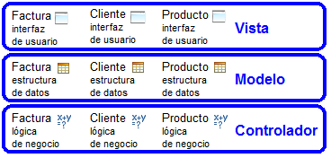
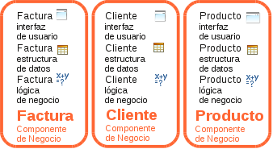
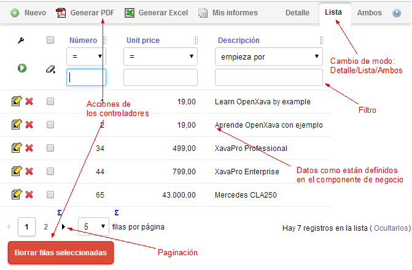
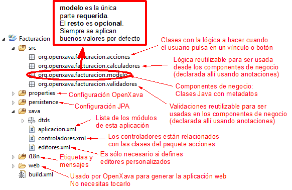
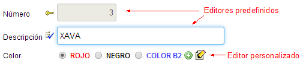

Table of Contents
Apéndice A: Arquitectura y filosofía
OpenXava es un marco de trabajo para desarrollo rápido de aplicaciones de gestión con Java. Es fácil de aprender y rápido para desarrollar. Al mismo tiempo es extensible y personalizable, además el código de la aplicación se estructura desde un punto de vista orientado a objetos puro. Por lo tanto, puedes enfrentarte a aplicaciones complejas con él.La aproximación de OpenXava al desarrollo rápido no es por medio de usar entornos visuales (como Visual Basic o Delphi), o scripting, como PHP. Más bien, el enfoque de OpenXava es dirigido por el modelo (model-driven), donde el corazón de tu aplicación son clases Java que describen tu problema. De esta forma conseguimos productividad sin utilizar código espagueti.
Este capítulo mostrará los conceptos en los que se fundamenta OpenXava y también una visión general de su arquitectura.
Los conceptos
Aunque OpenXava tiene una visión muy pragmática del desarrollo, está basado en un refinamiento de conceptos preexistentes, algunos populares y otros no tanto. El más popular es el Desarrollo Dirigido por el Modelo (Model-Driven Development, MDD), que OpenXava usa de una manera ligera. El otro concepto, el Componente de Negocio, es raíz y principio básico de OpenXava, además de ser la alternativa opuesta a MVC.Veamos estos conceptos con más detalles.
Desarrollo Dirigido por el Modelo Ligero
Básicamente, MDD establece que únicamente se ha de desarrollar la parte del modelo de una aplicación y el resto se generará a partir de este modelo:
En el contexto de MDD el modelo es el medio para representar los datos y la lógica de la aplicación. Puede ser, bien mediante una notación gráfica, como UML, o bien mediante una notación textual como un Lenguaje Específico del Dominio (Domain-Specific Language, DSL).
Por desgracia, el uso de MDD es muy complejo. Requiere de una gran cantidad de tiempo, pericia y herramientas. Aun así la idea tras MDD sigue siendo muy buena, por lo tanto OpenXava toma esa idea de una manera simplificada. Usa simples clases de Java con anotaciones para definir el modelo y no usa generación de código, en vez de eso toda la funcionalidad de la aplicación es generada dinámicamente en tiempo de ejecución:
| Definición del modelo |
Generación de la aplicación |
|
|---|---|---|
| MDD clásico |
UML/DSL |
Generación de código |
| OpenXava |
Simple clases Java |
Dinámicamente en tiempo de ejecución |
A partir de clases Java simples obtienes una aplicación lista para usar. La siguiente sección sobre el concepto de Componente de Negocio revelará algunos detalles importantes sobre la naturaleza de estas clases.
Componente de Negocio
Un Componente de Negocio consiste en todos los artefactos de software relacionados con un concepto de negocio. Los componentes de negocio son tan solo una forma de organizar el software. La otra forma de organizar software es MVC (Model-View Controller), donde clasificas el código por datos (modelo), interfaz de usuario (vista) y lógica (controlador).Así se organizan los artefactos de software en una aplicación MVC:

Todos los artefactos para la interfaz de usuario de la aplicación, tales como páginas JSP, JSF, Swing, código JavaFX, etc. están en el mismo lugar, la capa de la vista. Lo mismo ocurre para el modelo y el controlador. Esto contrasta con una arquitectura basada en componentes de negocio donde los artefactos de software se organizan alrededor de los conceptos de negocio, de esta manera:

Aquí, todos los artefactos de software acerca del concepto de factura, como la interfaz de usuario, acceso a base de datos, lógica de negocio, etc. están en un mismo lugar.
¿Qué enfoque es mejor? Eso depende de tus necesidades. Si tienes que cambiar frecuentemente la estructura de los datos y la lógica de negocio entonces la opción de los componentes de negocio es muy práctica, porque todas las cosas que necesitas tocar cuando haces un cambio están en el mismo sitio y no esparcidas por multitud de archivos.
La pieza básica para desarrollar aplicaciones OpenXava es el componente de negocio y la forma de definir un componente de negocio en OpenXava es usando una simple clase Java con anotaciones. Tal como se ilustra en este código:
/** * Una clase Java para definir un componente de negocio. */ @Entity // Base de datos @Table(name="GSTFCT") // Base de datos @View(members= // Interfaz de usuario "anyo, numero, fecha, pagada;" + "cliente, comercial;" + "detalles;" + "totales [ sumaImportes, porcentajeIva, iva ]" ) public class Factura { @Id // Base de datos @Column(length=4) // Base de datos @Max(9999) // Validación @Required // Validación @DefaultValueCalculator( // Lógica de negocio declarativa CurrentYearCalculator.class ) private int anyo; // Estructura de datos (1) @ManyToOne(fetch=FetchType.LAZY) // Base de datos @DescriptionsList // Interfaz de usuario private Comercial comercial; // Estructura de datos public void aplicarDescuentos() { // Lógica de negocio programática (2) ... } ... }Como puedes ver, todo acerca del concepto de negocio de factura se define en un único lugar, la clase Factura. En esta clase defines cosas de base de datos, estructura de los datos, lógica de negocio, interfaz de usuario, validación, etc.
Esto se hace usando la facilidad de metadatos de Java, las famosas anotaciones. Estas son las anotaciones usadas en este ejemplo:
| Faceta |
Metadatos |
Implementado por |
|---|---|---|
| Base de datos |
@Entity, @Table, @Id, @Column, @ManyToOne |
JPA |
| Interfaz de usuario |
@View, @DescriptionsList |
OpenXava |
| Validación |
@Max, @Required |
Bean Validation, OpenXava |
| Lógica de negocio |
@DefaultValueCalculator |
OpenXava |
Además, usamos Java básico, como propiedades (anyo y comercial, 1) para definir la estructura de los datos, y los métodos (aplicarDescuentos(), 2) para la lógica de negocio programada.
Todo lo que se necesita escribir sobre factura está en Factura.java. Es un componente de negocio. La magia de OpenXava es que puede producir una aplicación funcional a partir de componentes de negocio.
Arquitectura de la aplicación
Has visto como los componentes de negocio son las células básicas para construir una aplicación OpenXava, es más, puedes crear una aplicación OpenXava completa usando únicamente componentes de negocio. No obstante, hay otros ingredientes que puedes usar en una aplicación OpenXava.Perspectiva del desarrollador de aplicaciones
Aunque puedes crear una aplicación completamente funcional usando solo componentes de negocio, a veces es necesario añadir algún que otro elemento adicional para poder ajustar el comportamiento de tu aplicación a tus necesidades. Una aplicación completa de OpenXava tiene la siguiente forma:
Aparte de componentes de negocio puedes encontrar módulos, controladores, editores, validadores y calculadores. Veamos que son estas cosas:
- Componentes de negocio: Clases de Java que describen los conceptos de negocio en todos sus aspectos. Estas son las únicas piezas requeridas en una aplicación OpenXava.
- Módulos: Un módulo es lo que el usuario final ve. Es la unión de un componente de negocio y varios controladores. Puedes omitir la definición de los módulos, en ese caso se asume un módulo por cada componente de negocio.
- Controladores: Un controlador es una colección de acciones. Para el usuario, las acciones son botones o vínculos que él puede pulsar; para el desarrollador son clases con lógica a hacer cuando el usuario pulsa en esos botones. Los controladores definen el comportamiento de la aplicación y normalmente son reutilizables. OpenXava incluye un conjunto de controladores predefinidos y por supuesto puedes definir los tuyos propios.
- Editores: Componentes de la interfaz de usuario para definir la forma en que los miembros de un componente de negocio son visualizados y editados. Es una manera de personalizar la generación de la interfaz de usuario.
- Validadores: Lógica de validación reutilizable que puedes usar en cualquier componente de negocio.
- Calculadores: Lógica de negocio reutilizable que puedes usar en algunos puntos de los componentes de negocio.
Perspectiva del usuario
El usuario ejecuta los módulos, usualmente tecleando la URL del módulo en su navegador o accediendo desde el menú de la aplicación. Un módulo de OpenXava normalmente consta de un modo lista para navegar por los objetos:
Y un modo detalle para editarlos:

Esto muestra visualmente lo que es un módulo: una pieza funcional de software generada a partir de un componente de negocio (datos y lógica de negocio) y varios controladores (comportamiento).
Estructura del proyecto
Has visto el punto de vista conceptual y del usuario de una aplicación, pero ¿qué aspecto tiene una aplicación OpenXava para ti como desarrollador?:
Sólo las clases en el paquete modelo, los componentes de negocio, son obligatorias. Esto es a vista de pájaro. Aprenderás muchos más detalles en el resto del libro.
Flexibilidad
OpenXava genera automáticamente una aplicación desde clases con metadatos. Esto incluye la generación automática de la interfaz de usuario. Puedes pensar que esto es demasiado “automático”, y es fácil que la interfaz de usuario resultante no cumpla con tus requerimientos, especialmente si estos son muy específicos. Esto no es así, las anotaciones de OpenXava te ofrecen flexibilidad suficiente para interfaces de usuario muy potentes que cubren la mayoría de los casos.A pesar de eso, OpenXava te proporciona puntos de extensión para darte la oportunidad de personalizar la generación de la interfaz de usuario. Estos puntos de extensión incluyen editores y vistas personalizadas.
Editores
Los editores son los elementos de la interfaz de usuario para ver y editar los miembros de tu componente de negocio. OpenXava usa editores predefinidos para los tipos básicos, pero puedes crearte tus propios editores. En el siguiente ejemplo se usan editores predefinidos para números y cadenas, pero para la propiedad color se usa un editor personalizado:
Puedes usar JSP, JavaScript, HTML, AJAX, o la tecnología de presentación web que quieras, para crear tu editor personalizado, y entonces asignarlo a los miembros o tipos que desees.
Esta es una manera bastante reutilizable de personalizar la generación de la interfaz de usuario en tu aplicación OpenXava.
Vista personalizada
A veces necesitas visualizar tu componente de negocio usando una interfaz de usuario especial, por ejemplo, usando una galería de fotos, un mapa, un gráfico, un calendario, etc. Para esto puedes usar una vista personalizada, que te permite generar la interfaz de usuario usando JavaScript, HTML, JSP, etc. a mano, y entonces usarla dentro de tu aplicación OpenXava. El siguiente pantallazo muestra un módulo OpenXava que usa una vista personalizada:
Resumiendo, OpenXava genera la interfaz de usuario automáticamente para ti, pero siempre tienes la opción de hacerlo tú mismo.
Resumen
OpenXava usa un enfoque dirigido por el modelo para hacer desarrollo rápido, donde tú escribes el modelo y obtienes una aplicación completa a partir de él. Lo especial de OpenXava es que el modelo está formado por componentes de negocio.Un componente de negocio te permite estructurar la aplicación alrededor de los conceptos de negocio. En OpenXava una simple y llana clase Java con anotaciones es suficiente para definir un componente de negocio, haciendo el desarrollo de la aplicación bastante declarativo.
Aparte de los componentes de negocio una aplicación OpenXava tiene módulos, controladores, validadores, calculadores, etc. que puedes usar para personalizar tu aplicación. Es posible, incluso, personalizar la forma en que OpenXava genera la interfaz de usuario con los editores y las vistas personalizadas.
OpenXava es una solución pragmática para el desarrollo Java Empresarial. Genera muchísimas cosas automáticamente, pero a la vez es suficientemente flexible como para ser útil en el desarrollo de aplicaciones de gestión de la vida real.
Como conclusión, podrás desarrollar aplicaciones con simples clases Java con anotaciones. En los otro apéndices puedes aprender más detalles sobre las anotaciones que podemos usar con OpenXava.
¿Problemas con la lección? Pregunta en el foro